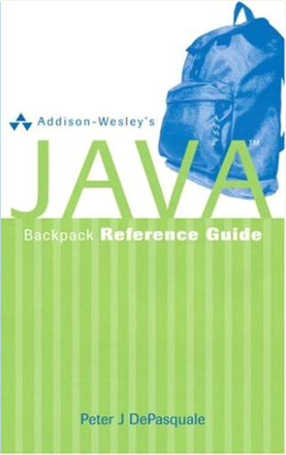
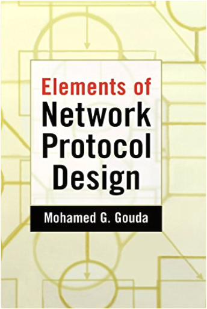
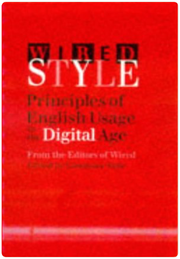
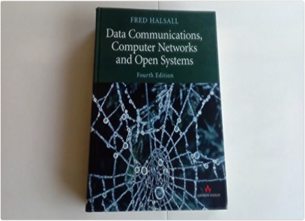

Book DescriptionThe most authoritative college textbook available on human sexuality, this new edition of Crooks and Baur's OUR SEXUALITY has been thoroughly and carefully updated to reflect the most current research literature. Sensitive, comprehensive, and candid scholars and teachers, the authors continue to engage students with the most exciting, emerging research in the field. The authors have further refined their focus on strengthening healthy communication among partners, as well as their overall coverage on maintaining a responsible and healthy sexual relationship. They have also given even greater attention to diversity and inclusiveness. Other highlights include the very latest research, including anew feature called "Spotlight on Research;" new stories about the experiences of real people from the "Authors' Files;" and a writing style that is warm, direct, and non-judgmental. As always, thorough coverage of all major topics is incorporated into every section (including sexual health). The result is a timely new edition that retains and builds upon all of the strengths that have made it the best-selling book in the market.This book does not include a Cd.  Addison-Wesley's Java Backpack Reference GuidePeter DePasquale A quick reference to Java's most frequently used keywords and APIs. Provides information for someone who just wants the specifics of Java.Integrates syntax examples, keyword descriptions, and programming tips in a way that will make it the must-have reference.For a reader who wants a reference and specifics of Java in one handy place.  Photographs, drawings, maps, and usage notes supplement the central and related meanings of English words including current terms in business, science, technology, and the arts  Elements of Network Protocol DesignMohamed G. Gouda While we are all becoming familiar with the Internet, which uses the Transfer Control Protocol/Internet Protocol (TCP/IP), more and more additions and changes emerge every year, including protocols that support multimedia, encryption, and other methods of secure data transfer. This book focuses on the design and implementation of these computer network information transfer protocols. Using the Internet as a running case study throughout the book, the authors introduce a formal notation for writing network protocols and organize their discussion around protocol functions.  0-312-40161-2 DIANA HACKER 4TH EDITION BEDFORD/St. MARTIN'S 1999 424 PAGES  Wired Style: Principles of English Usage in the Digital AgeConstance Hale, Wired Wired magazine's top editors have weighed thousands of new terms, phrases, idioms, and usages of the language since the advent of the global village. Elements of Style is no longer sufficient as a guide to English usage—Wired America needs Wired Style. |  Data Communications, Computer Networks, and Open SystemsF. Halsall Drawing on his twenty years as a researcher and teacher, Fred Halsall presents the complex world of data communications and networks with clarity and thoroughness. An invaluable resource to both the student and the practicing computer professional, this fourth edition of the very successful Data Communications, Computer Networks and Open Systems has been extensively updated to reflect the rapid developments in this field. Statistics ExplainedPerry R. Hinton Statistics Explained is an accessible introduction to statistical concepts and ideas. It makes few assumptions about the reader’s statistical knowledge, carefully explaining each step of the analysis and the logic behind it. The book: Applied Cryptography and Network Security: Third International Conference, ACNS 2005, New York, NY, USA, June 7-10, 2005, ProceedingsJohn Ioannidis, Angelos D. Keromytis, Moti Yung The 3rd International Conference on Applied Cryptography and Network Security (ACNS 2005) was sponsored and organized by ICISA (the International Commu- cations and Information Security Association). It was held at Columbia University in New York, USA, June 7–10, 2005. This conference proceedings volume contains papers presented in the academic/research track. ACNS covers a large number of research areas that have been gaining importance in recent years due to the development of the Internet, wireless communication and the increased global exposure of computing resources. The papers in this volume are representative of the state of the art in security and cryptography research, worldwide. The Program Committee of the conference received a total of 158 submissions from all over the world, of which 35 submissions were selected for presentation at the a- demic track. In addition to this track, the conference also hosted a technical/ industrial/ short papers track whose presentations were also carefully selected from among the submissions. All submissions were reviewed by experts in the relevant areas. Coordination Models and Languages: 7th International Conference, COORDINATION 2005, Namur, Belgium, April 20-23, 2005, ProceedingsJean-Marie Jacquet, Gian Pietro Picco Modern information systems rely increasingly on combining concurrent, d- tributed, mobile, recon?gurable and heterogenous components. New models, architectures, languages, and veri?cation techniques are therefore necessary to cope with the complexity induced by the demands of today's software devel- ment. Coordination languages have emerged as a successful approach, providing abstractions that cleanly separate behavior from communication and therefore increasing modularity, simplifying reasoning, and ultimately enhancing software development. This volume contains the proceedings of the 7th International Conference on Coordination Models and Languages (Coordination 2005), held at the Ins- tute of Informatics of the University of Namur, Belgium, on April 20-23, 2005. The previous conferences in this series took place in Cesena (Italy), Berlin (G- many),Amsterdam(TheNetherlands),Limassol(Cyprus),York(UK),andPisa (Italy). Building upon the success of these events, Coordination 2005 provided a forum for the community of researchers interested in models, languages, and implementation techniques for coordination and component-based software, as well as applications that exploit them. The conference attracted 88 submissions from authors all over the world.  This text provides an introduction to the inner workings of computer networks, employing an engineering approach that should help readers gain a grasp of not just how, but also why, networks work the way they do. The book features up-to-date network technology, including practical treatment of Asynchronous Transfer Mode (ATM).  Building on the successful top-down approach of previous editions, the Fifth Edition of Computer Networking continues with an early emphasis on application-layer paradigms and application programming interfaces, encouraging a hands-on experience with protocols and networking concepts. With this edition, Kurose and Ross have revised and modernized treatment of some key chapters to integrate the most current and relevant networking technologies.  The most up-to-date introduction to the field of computer networking, this book's top-down approach starts at the application layer and works down the protocol stack. It also uses the Internet as the main example of networks. This all creates a book relevant to those interested in networking today. By starting at the application-layer and working down the protocol stack, this book provides a relevant introduction of important concepts. Based on the rationale that once a reader understands the applications of networks they can understand the network services needed to support these applications, this book takes a "top-down" approach that exposes readers first to a concrete application and then draws into some of the deeper issues surrounding networking. This book focuses on the Internet as opposed to addressing it as one of many computer network technologies, further motivating the study of the material. This book is designed for programmers who need to learn the fundamentals of computer networking. It also has extensive material making it of great interest to networking professionals. |
 Made with Delicious Library
Made with Delicious Library